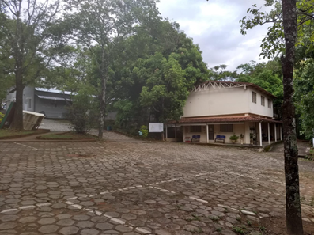
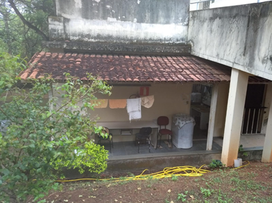

Also known as "The Near Rain Downtown", Backrooms level 704 is the 705th level of the Backrooms. Its infinite expanse of rock and dirt is dotted with small, simple and even a bit deteriorated houses, in wich transformed humans - wreches, facelings, doll faces, partygores - use to live. The sky is stationary and full of clounds from wich water never falls, and the air is 70% humid.

